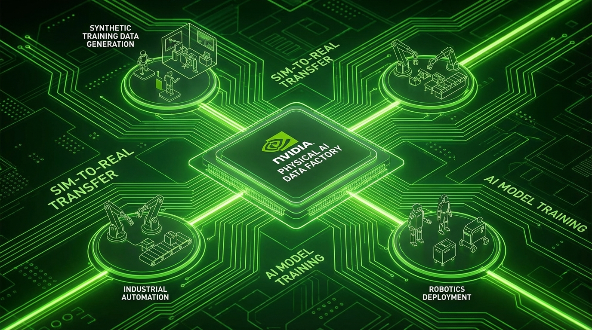

Every industrial company will become a robotics company. That's not my prediction—that's Jensen Huang's declaration from the GTC 2026 keynote, and after seeing what NVIDIA unveiled this week, I'm inclined to believe him.
The robots are coming. Not the clumsy, pre-programmed automatons of yesterday, but intelligent machines capable of perceiving, reasoning, and making real-time decisions in the physical world. NVIDIA calls it "physical AI," and it's about to reshape everything from factory floors to your living room.
The Physical AI Data Factory
NVIDIA's big announcement is the Physical AI Data Factory Blueprint—an open reference architecture designed to solve the biggest bottleneck in robotics: training data. Here's the problem: you can't train a robot to handle rare edge cases if you can't simulate those edge cases safely. And you can't wait for a warehouse robot to encounter every possible dropped package scenario in the real world.
The solution? Generate synthetic training data at scale. The blueprint leverages NVIDIA Cosmos open world foundation models and coding agents to create diverse datasets—including those rare, dangerous, or expensive scenarios that would be impractical to capture in reality. NVIDIA claims this reduces the cost, time, and complexity of training robots by orders of magnitude.
Think about what this means. A warehouse robot can now train on millions of simulated hours before touching a real package. An autonomous vehicle can encounter every weather condition, every pedestrian behavior, every edge case imaginable—in simulation—before driving a single real mile.
GR00T N1.7 and the Rise of Humanoid Robots
The GR00T N1.7 model is now available in early access with commercial licensing, offering generalized robot skills including advanced dexterous control. This isn't just about moving from point A to point B anymore. We're talking about robots that can manipulate objects with human-like precision.
But NVIDIA didn't stop there. They previewed GR00T N2, a next-generation robot foundation model based on DreamZero research. The trajectory is clear: each iteration brings us closer to robots that can operate in unstructured human environments without specialized programming.

The partnerships announced at GTC tell the real story. ABB Robotics, FANUC, KUKA—the giants of industrial automation—are all integrating NVIDIA's physical AI models. AGIBOT and Humanoid are bringing humanoid robots to market. This isn't experimental research anymore. This is production-scale deployment.
Cosmos 3: World Foundation Models
Cosmos 3 is the first world foundation model that unifies synthetic world generation, vision reasoning, and action simulation. What does that actually mean? It means AI systems can now understand the physics of the world, predict how objects will behave, and plan actions accordingly.
The applications extend far beyond robotics. Autonomous vehicles need to predict how other drivers will behave. Warehouse robots need to understand object permanence and physics. Surgical robots need to anticipate tissue behavior. Cosmos provides the underlying world model that makes these capabilities possible.
The Disney Demonstration: Robots with Personality
Perhaps the most crowd-pleasing demo at GTC was a robotic replica of Olaf from Disney's "Frozen"—complete with emotive expressions and responsive behavior. The "brain" runs on NVIDIA Jetson and NVIDIA Omniverse, showcasing a future where robots aren't just functional but personable.
This matters more than it might seem. The technical challenge of making a robot move is being solved. The next challenge is making humans comfortable with robots in their spaces. Disney's expertise in character animation and emotional storytelling might prove just as valuable as any technical breakthrough.
Edge AI and the T-Mobile Partnership
NVIDIA and T-Mobile, along with Nokia, announced a partnership to deploy physical AI applications over distributed edge networks. The vision: transform cell sites into AI computing platforms that power autonomous vehicles, robots, and smart city management.
The NVIDIA IGX Thor platform—now generally available—brings real-time physical AI to the edge. This isn't cloud-dependent AI that fails when connectivity drops. This is local, low-latency intelligence that can make split-second decisions in safety-critical applications.
What This Means for the Future
Jensen Huang's keynote emphasized a fundamental shift: AI is no longer a single breakthrough but essential infrastructure powering a new industrial era. The companies that master physical AI will define the next century of manufacturing, logistics, healthcare, and transportation.
The implications are staggering. Factory workers won't be replaced by dumb machines—they'll be augmented by intelligent systems that handle the dangerous, repetitive, and physically demanding tasks. Surgeons will have robotic assistants with superhuman precision. Delivery will become fully autonomous.
But there's a darker undercurrent here too. The concentration of capability in NVIDIA's ecosystem is remarkable. If you're building physical AI, you're almost certainly using NVIDIA chips, NVIDIA simulation tools, and NVIDIA foundation models. The company that already dominates AI training is now positioned to dominate AI deployment in the physical world.
The age of embodied intelligence has arrived. The only question is whether we're ready for it.